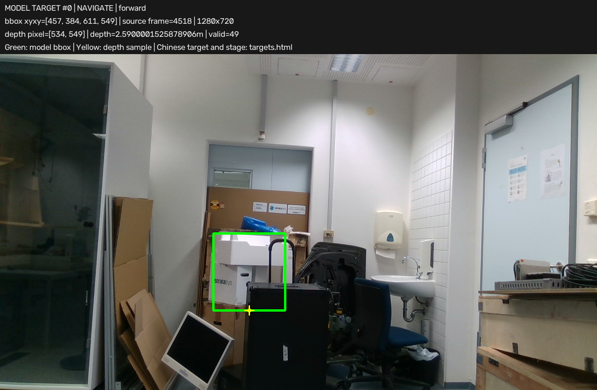
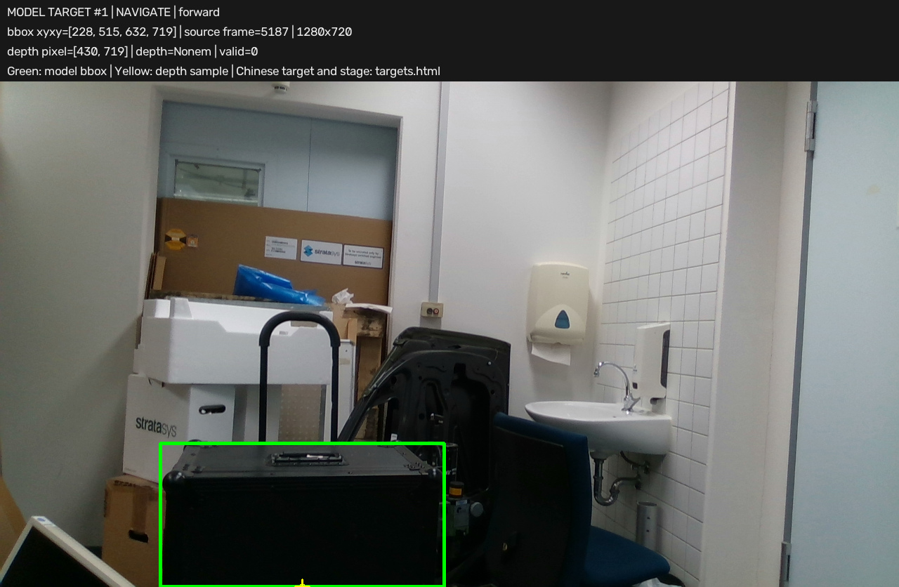
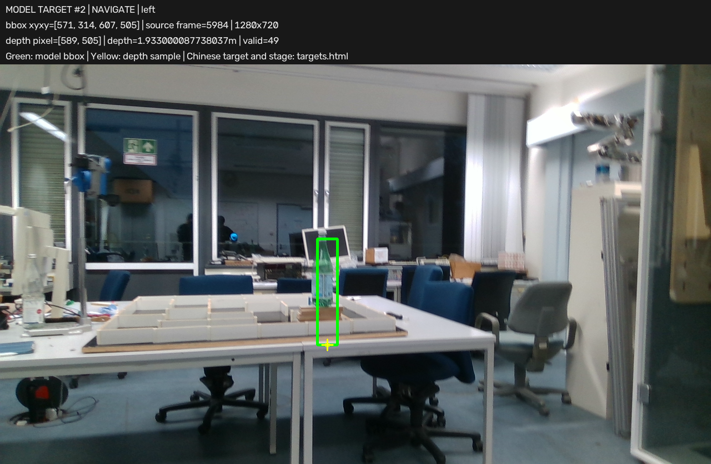
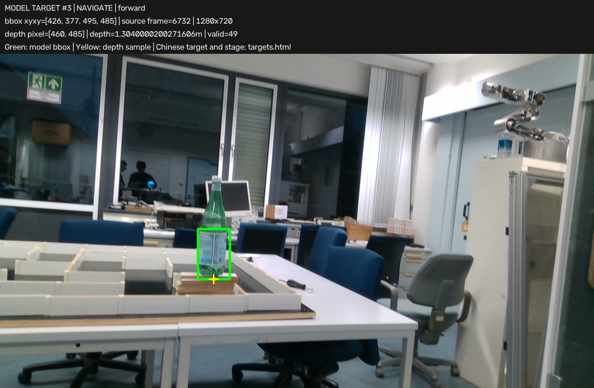
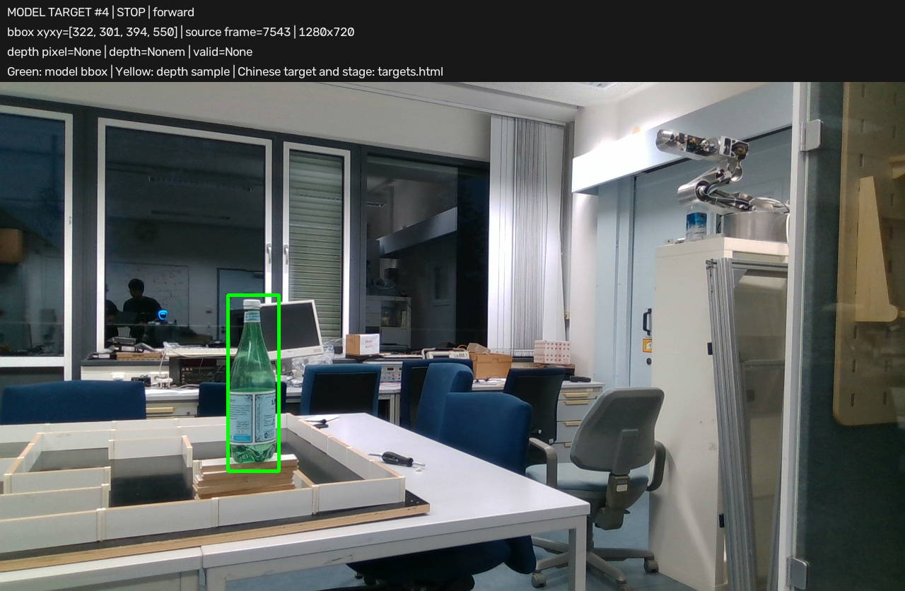

绿框：模型返回的框；黄十字/小框：本次投影实际使用的深度采样位置。这些标注保留模型原始选择，不代表目标识别正确。像素坐标以原图左上角为(0,0)，x向右、y向下；图片上方说明栏不计入坐标。局部目标仍是原有名义前/左坐标，不是标定后的地图坐标。无投影时不绘制深度采样标记。刷新页面查看新决策。
阶段判断：向前走到黑色箱子前；已完成：0/2
框 xyxy：[457, 384, 611, 549]；深度采样像素：[534, 549]；采样深度：2.5900001525878906 m；有效样本：49
名义局部目标 [前方, 左方]：[2.5900001525878906, 0.3360242476385797] m；是否使用前进兜底：False；客户端接受导航：True

阶段判断：向左转走到绿色瓶子前停下；已完成：1/2
框 xyxy：[228, 515, 632, 720]；深度采样像素：[430, 719]；采样深度：None m；有效样本：0
名义局部目标 [前方, 左方]：[1.5, 0.0] m；是否使用前进兜底：True；客户端接受导航：True

阶段判断：向左转走到绿色瓶子前停下；已完成：1/2
框 xyxy：[571, 314, 607, 505]；深度采样像素：[589, 505]；采样深度：1.933000087738037 m；有效样本：49
名义局部目标 [前方, 左方]：[1.933000087738037, 0.13408858355185224] m；是否使用前进兜底：False；客户端接受导航：True

阶段判断：向左转走到绿色瓶子前停下；已完成：1/2
框 xyxy：[426, 377, 495, 485]；深度采样像素：[460, 485]；采样深度：1.3040000200271606 m；有效样本：49
名义局部目标 [前方, 左方]：[1.3040000200271606, 0.2750989785845978] m；是否使用前进兜底：False；客户端接受导航：True

阶段判断：COMPLETED；已完成：2/2
框 xyxy：[322, 301, 394, 550]；深度采样像素：None；采样深度：None m；有效样本：None
名义局部目标 [前方, 左方]：None m；是否使用前进兜底：None；客户端接受导航：False
